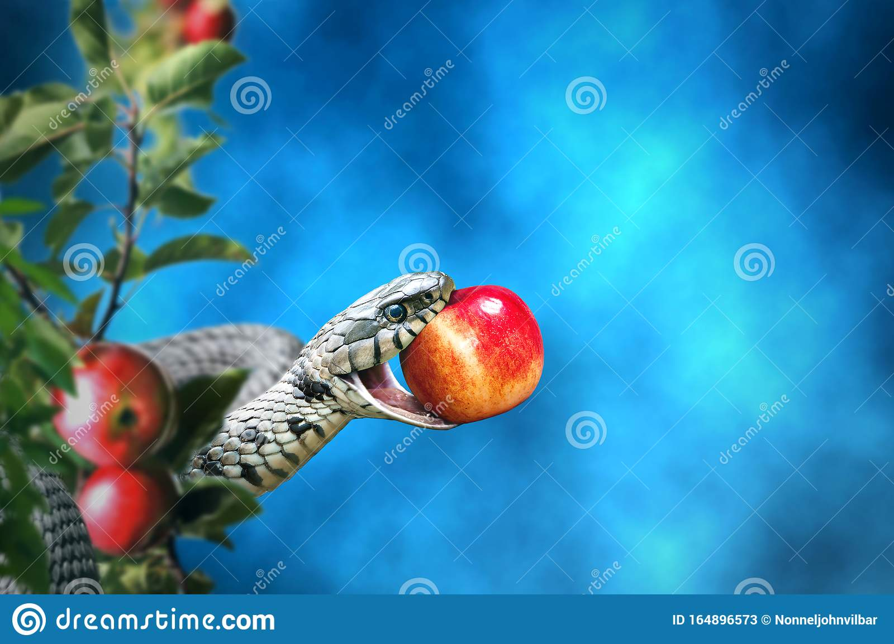

God's Food

Chapter 1 - Rich Sister, Poor Sister
There were once upon a time two sisters, one of whom had no children and was rich, and the other had five and was a widow, and so poor that she no longer had food enough to satisfy herself and her children. There were once upon a time two sisters, one of whom had no children and was rich, and the other had five and was a widow, and so poor that she no longer had food enough to satisfy herself and her children.There were once upon a time two sisters, one of whom had no children and was rich, and the other had five and was a widow, and so poor that she no longer had food enough to satisfy herself and her children. There were once upon a time two sisters, one of whom had no children and was rich, and the other had five and was a widow, and so poor that she no longer had food enough to satisfy herself and her children.
There were once upon a time two sisters, one of whom had no children and was rich, and the other had five and was a widow, and so poor that she no longer had food enough to satisfy herself and her children. There were once upon a time two sisters, one of whom had no children and was rich, and the other had five and was a widow, and so poor that she no longer had food enough to satisfy herself and her children.There were once upon a time two sisters, one of whom had no children and was rich, and the other had five and was a widow, and so poor that she no longer had food enough to satisfy herself and her children. There were once upon a time two sisters, one of whom had no children and was rich, and the other had five and was a widow, and so poor that she no longer had food enough to satisfy herself and her children.

Chapter 2 - Plenty of Riches but Empty of Kindness
In her need, therefore, the poor sister went to her rich sister, and said, my children and I are suffering the greatest hunger. You are rich, give me a mouthful of bread. The very rich sister was as hard as a stone, and said, I myself have nothing in the house, and drove away the poor creature with harsh words. In her need, therefore, the poor sister went to her rich sister, and said, my children and I are suffering the greatest hunger. You are rich, give me a mouthful of bread. The very rich sister was as hard as a stone, and said, I myself have nothing in the house, and drove away the poor creature with harsh words.
In her need, therefore, the poor sister went to her rich sister, and said, my children and I are suffering the greatest hunger. You are rich, give me a mouthful of bread. The very rich sister was as hard as a stone, and said, I myself have nothing in the house, and drove away the poor creature with harsh words. In her need, therefore, the poor sister went to her rich sister, and said, my children and I are suffering the greatest hunger. You are rich, give me a mouthful of bread. The very rich sister was as hard as a stone, and said, I myself have nothing in the house, and drove away the poor creature with harsh words. In her need, therefore, the poor sister went to her rich sister, and said, my children and I are suffering the greatest hunger. You are rich, give me a mouthful of bread. The very rich sister was as hard as a stone, and said, I myself have nothing in the house, and drove away the poor creature with harsh words.

Chapter 3 - The Compassionate Husband, Bloody Bread
After some time the husband of the rich sister came home, and was just going to cut himself a piece of bread, but when he made the first cut into the loaf, out flowed red blood.When the woman saw that, she was terrified and told him what had occurred. He hurried away to help the widow and her children. When he entered her room, he found her praying. She had her two youngest children in her arms, and the three eldest were lying dead. He offered her food, but she answered, for earthly food have we no longer any desire. God has already satisfied the hunger of three of us, and he will hearken to our supplications likewise. Scarcely had she uttered these words than the two little ones drew their last breath, whereupon her heart broke, and she sank down dead. When he entered her room, he found her praying. She had her two youngest children in her arms, and the three eldest were lying dead. He offered her food, but she answered, for earthly food have we no longer any desire. God has already satisfied the hunger of three of us, and he will hearken to our supplications likewise. Scarcely had she uttered these words than the two little ones drew their last breath, whereupon her heart broke, and she sank down dead.
After some time the husband of the rich sister came home, and was just going to cut himself a piece of bread, but when he made the first cut into the loaf, out flowed red blood.When the woman saw that, she was terrified and told him what had occurred. He hurried away to help the widow and her children. When he entered her room, he found her praying. She had her two youngest children in her arms, and the three eldest were lying dead. He offered her food, but she answered, for earthly food have we no longer any desire. God has already satisfied the hunger of three of us, and he will hearken to our supplications likewise. Scarcely had she uttered these words than the two little ones drew their last breath, whereupon her heart broke, and she sank down dead.
Chapter 4 - God's Food
When he entered her room, he found her praying. She had her two youngest children in her arms, and the three eldest were lying dead. He offered her food, but she answered, for earthly food have we no longer any desire. God has already satisfied the hunger of three of us, and he will hearken to our supplications likewise. Scarcely had she uttered these words than the two little ones drew their last breath, whereupon her heart broke, and she sank down dead. When he entered her room, he found her praying. She had her two youngest children in her arms, and the three eldest were lying dead. He offered her food, but she answered, for earthly food have we no longer any desire. God has already satisfied the hunger of three of us, and he will hearken to our supplications likewise. Scarcely had she uttered these words than the two little ones drew their last breath, whereupon her heart broke, and she sank down dead. When he entered her room, he found her praying. She had her two youngest children in her arms, and the three eldest were lying dead. He offered her food, but she answered, for earthly food have we no longer any desire. God has already satisfied the hunger of three of us, and he will hearken to our supplications likewise. Scarcely had she uttered these words than the two little ones drew their last breath, whereupon her heart broke, and she sank down dead.